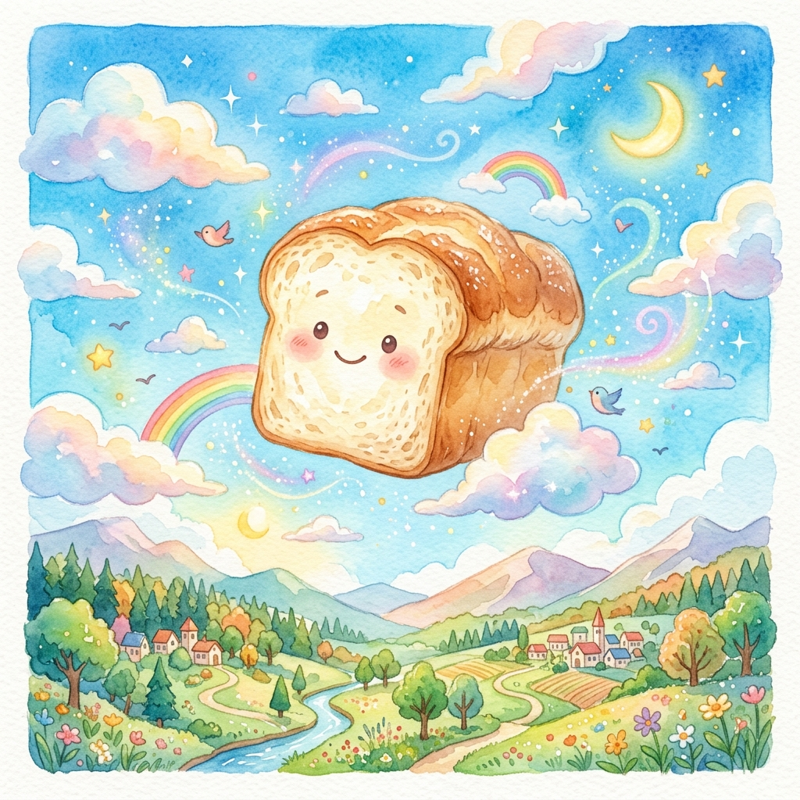
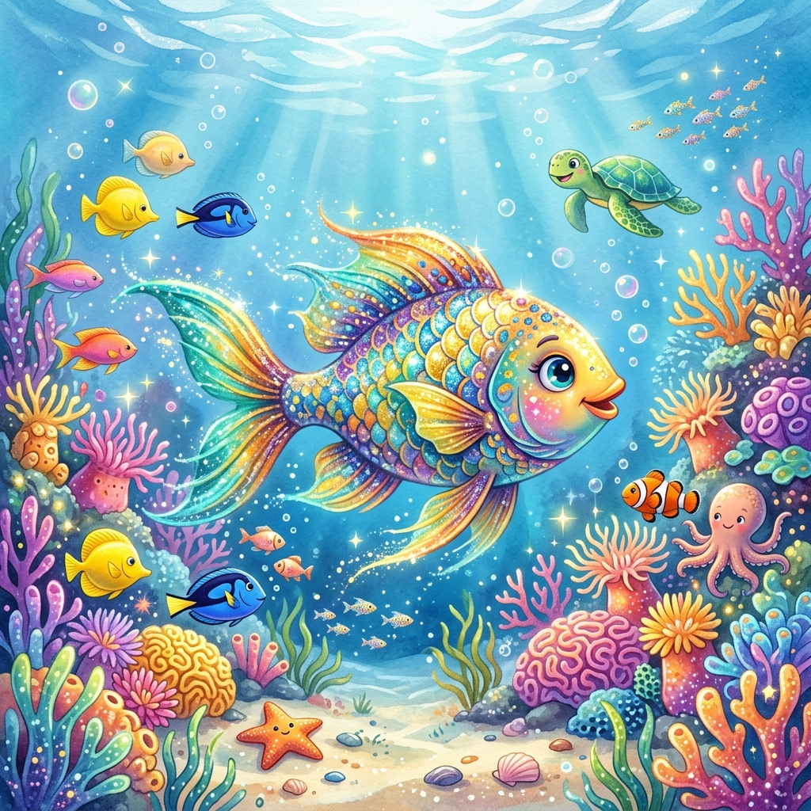

📖 오늘의 재미있는 이야기 📖
☁️ 구름빵 🍞

[기] 어느 비 오는 아침, 고양이 남매 홍비와 홍시는 나뭇가지에 걸려 있는 작은 구름을 발견했어요.
[승] 구름을 안고 집으로 돌아오자, 엄마는 그 구름을 반죽에 섞어 폭신폭신한 빵을 구워주셨답니다.
[전] 따끈따끈한 구름빵을 먹자 홍비와 홍시의 몸이 하늘로 떠올랐어요! 남매는 아침도 못 먹고 출근하신 아빠에게 구름빵을 전해주기로 했어요.
[결] 구름빵을 들고 하늘을 날아올라 복잡한 도시를 가로지르며 무사히 아빠에게 빵을 전달하는 따뜻한 모험 이야기랍니다.
🐟 무지개 물고기 🌈

[기] 깊고 푸른 바닷속에 은빛으로 반짝반짝 빛나는 신비로운 비늘을 가진 무지개 물고기가 살고 있었어요.
[승] 무지개 물고기는 자신의 예쁜 비늘을 뽐내기만 할 뿐 친구들에게 나누어 주지 않아 가장 외로운 물고기가 되고 말았답니다.
[전] 고민 끝에 문어 할머니를 찾아가자, 할머니는 "반짝이는 비늘을 친구들에게 하나씩 나누어 주렴. 그럼 진짜 행복이 무엇인지 알게 될 거란다."라고 조언해 주셨어요.
[결] 무지개 물고기가 용기를 내어 비늘을 나누어주자, 바닷속은 우정으로 가득 차게 되었고 진정한 나눔의 기쁨을 깨닫게 된답니다.